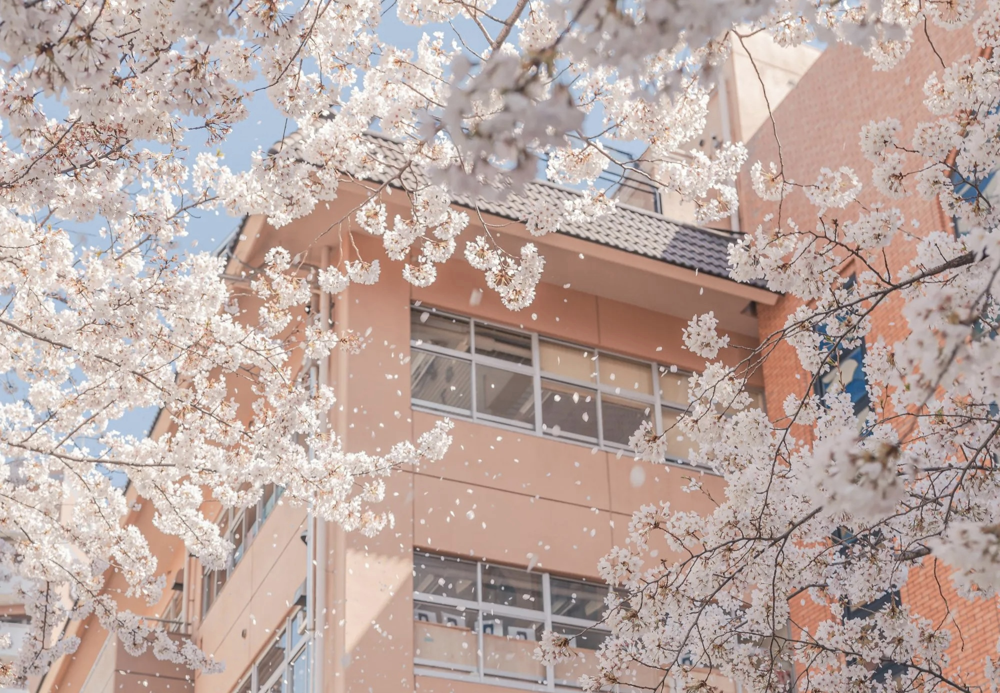

About me 杂七杂八

真要开始写写自己，发现却无从写起。我了解自己吗？我想是不了解的，像现在这样与自己独处的时间，很少很少。大部分的时间都在忙碌，我也会反复逃避这样的状态，以试图拥有休闲时光。可是不久就要再度投入到忙碌的生活当中去。在生活和学习当中，我总是平衡不了。我想，这可能是要花一辈子的时间去抗衡。
信息大爆炸的时代，想知道想了解的东西太多了，可是理解的东西却更少了。海量的信息下，每个人都变得渺小了起来，我想我的焦虑也来源于此。我经常处于自我堵塞的状态下。我想我需要改变自己的思维了。我不再需要记忆的能力，相反，我需要的是删除的能力。我有不知情权。
其实，最近，我的状态也算还行吧的。
最近看了一本书《世界尽头咖啡馆》感悟颇多